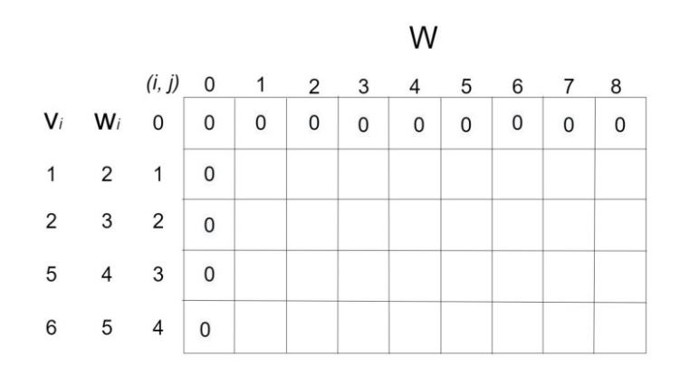
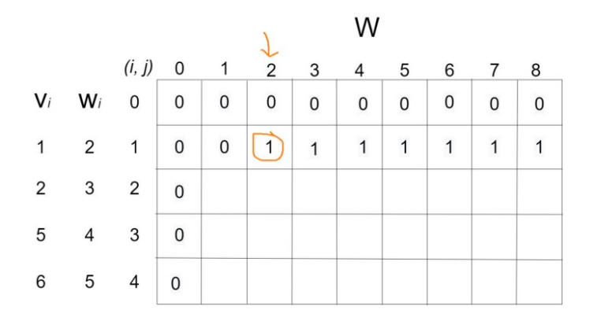
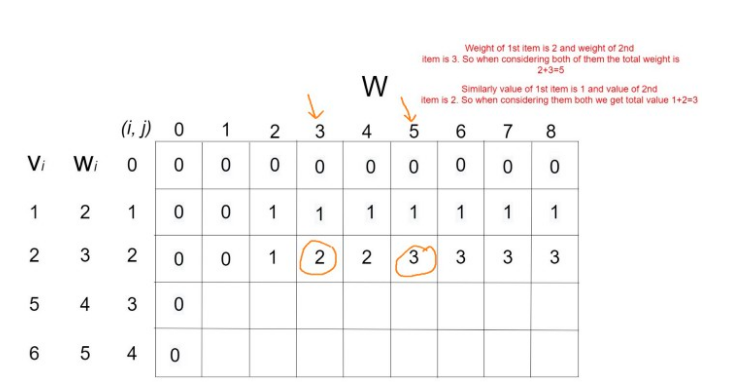

Overview
The 0/1 knapsack problem means that the items are either completely or no items are filled in a knapsack.
For example, we have two items having weights 2kg and 3kg, respectively. If we pick the 2kg item then we cannot pick 1kg item from the 2kg item (item is not divisible); we have to pick the 2kg item completely.
This is a 0/1 knapsack problem in which either we pick the item completely or we will pick that item.
The 0/1 knapsack problem is solved by the dynamic programming.
Example
Suppose we have a bag of maximum capacity C = 8units. We have a total of n = 4 items to choose from. The values of each item are given as a list v = [1, 2, 5, 6] and their corresponding weights are given as a list w = [2, 3, 4, 5].
Since this is a 0/1 knapsack problem, we can either include an item in the bag or can not include it.
We need to take the items in such a way so that the total profit is maximized and the total weight of items taken is less than or equal to the capacity C.
Solution:
We have a total capacity of 8 units, and we have 4 items. So we will create a table as follows:

Now let’s take the first item that has weight w = 2 units and value v = 1 units. So we can put it in the 3rd column of the 2nd row.

Now let’s move on to the 2nd item. Note that when considering the 2nd item we also have to consider the 1st item. The weight of the 2nd item is w = 3 units and the value v = 2 units. So we can put it in the 4th column of the 3rd row. And also considering the previous item their total weight w = 5 and value v = 3. So we have to put their total value in the 6th column of the 3rd row.

Now let’s move on to the 3rd item. When considering the 3rd item there will be four scenarios:
- Take only the 3rd item. The weight of the 3rd item is 4 and the value is 5.
- Take the 3rd and the 1st item. The total weight will be 4+2=6 and the total value will be 5+1=6.
- Take the 3rd and the 2nd item. The total weight will be 4+3=7 and the total value will be 5+2=7
- Take them all. The total weight will be 4+3+2=9. Which is greater than the bag capacity C = 8. So we can not take all three items.
If we represent the table as T, then
- T[i, j] = max( T[i-1, j], {T[i-1, j-w[i]] + v[i]} ); where i is the column value and j is the row value.
-
T[4, 1] = max( T[3, 1], T[3, 1–5] + 6) = max(T[3, 1], T[3, -4] + 6).
This is giving us a negative position. So we have to put the value of the previous row T[3, 1] = 0.
- T[4, 5] = max(T[3, 5], T[3, 5–5] + 6) = max(5, 0+6) = max(5,6) = 6
- T[4, 6] = max(T[3, 6], T[3, 6–5] + 6) = max(6, 0+6) = max(6, 6) = 6
- T[4, 7] = max(T[3, 7], T[3, 7–5] + 6) = max(7, 1+6) = max(7, 7) = 7
- T[4, 7] = max(T[3, 7], T[3, 7–5] + 6) = max(7, 1+6) = max(7, 7) = 7
- T[4, 8] = max(T[3, 8], T[3, 8–5] + 6) = max(7, 2+6) = max(7, 8) = 8
Code
def knapsack_DP(C, w, v, n):
# Initially filling the table with 0s
dp = [[0 for x in range(C+1)] for x in range(n+1)]
# Builidng the table dp[][] using the formula
for i in range(n + 1):
for j in range(C + 1):
if i == 0 or j == 0:
dp[i][j] = 0
elif w[i-1] <= j:
dp[i][j] = max(dp[i-1][j], dp[i-1][j-w[i-1]] + v[i-1])
else:
dp[i][j] = dp[i-1][j]
return dp[n][C]
v = [1, 2, 5, 6]
w = [2, 3, 4, 5]
C = 8
n = 4
print("Total profit:", knapsack_DP(C, w, v, n))
# Output:
# Total profit: 8